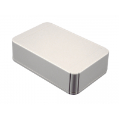
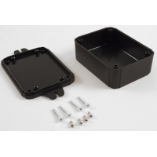

Project template containing the recommended board layout for Hammond Manufacturing RL6555:
Gray: RL6585-F - HM5730-ND
Gray: RL6585 - HM1170-ND
Gray: RL6555-F - HM5729-ND
Gray: RL6555 - HM1076-ND
|  |  |
The "Dwgs.User" layer contains all critical dimmensions in milimeters[inches].
The "Edge.Cuts" layer contains the maximum board outline and holes to align with board standoffs.
PCB Preview: